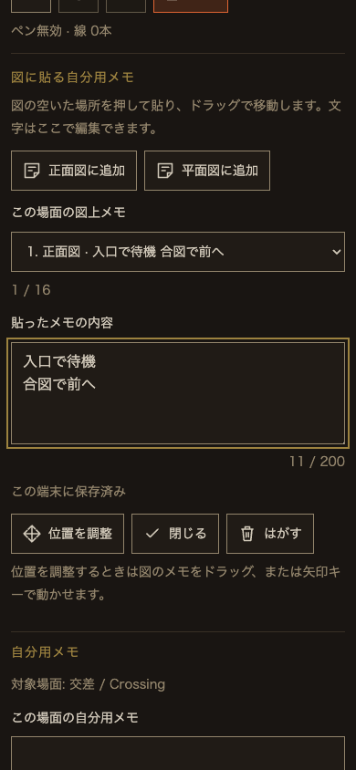
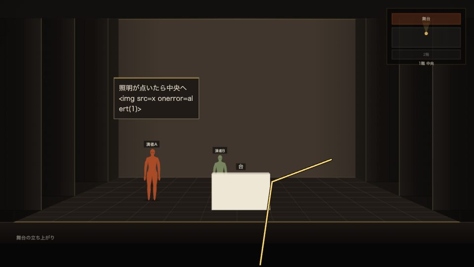

2026年9月10日 · ローカル実装 · 本番未デプロイ
図に貼る、自分用のメモ
Stage Sketch Viewerの正面図・平面図へ、演者自身の付箋を追加しました。本家の共通書体・配色とSVGの道具を使っています。
実装した利用者体験
- 横の道具欄で「メモ」を選び、正面図・平面図の空いた場所を押して貼ります。「正面図に追加」「平面図に追加」ボタンからも追加できます。
- 文章は横の入力欄で編集。ドラッグ、または「位置を調整」から矢印キーで移動します。スマートフォンでは舞台図の下へ入力欄が続きます。
- 自分用に保存され、再読み込み・場面移動後も残ります。はがす操作は画面内で確認・取り消しできます。
- 「この画面をオーナーへ共有」で送った正面図・平面図の画像にだけ、付箋とペンを含めます。表示名・文章も既存の共有方式で送ります。
- 公開更新で場面が変更・削除されても、以前の付箋は履歴に残ります。必要な付箋を1枚ずつ選び、現在の場面へコピーできます。
1場面につき正面図・平面図合計16枚、1枚200字まで。図上では表示領域に応じて省略し、全文は入力欄で確認できます。ペンとの同時操作を防ぎ、再生中は付箋を隠します。
保存・認可方式
付箋は舞台のショーJSONに書き込まず、既存の個人ノートへ図の種類・相対位置・本文を保存します。匿名ベータではこのブラウザ内だけに保存し、端末間同期はしません。アカウント利用時には既存の本人専用StudyReaderAccountへ保存・同期します。
サーバーとクライアント双方で枚数、文字数、型、座標範囲、ID重複を検証。本文はプレーンテキストで描画します。本人以外の個人ノート取得は禁止され、オーナーも未共有の付箋を読めません。既存の保存容量・競合検出・失効・レート制限を継続します。
隔離された描画ページに個人注釈用の層を追加しています。元の駒・照明・装置・線・ショー設定や、端末内の既存ショーは変更しません。新しい共有解析や外部送信は追加していません。
テストと結果
- 対象Nodeテスト・ゲスト権限：79 / 79成功。付箋の保存・入力検証・旧データ互換・履歴コピー・本人分離を含みます。
- 実Worker / SQLite：事前学習28 / 28、演者アカウント16 / 16、既存リアルタイム共有13 / 13成功。現在・過去の付箋が再起動後も保持されることを確認。
- Chrome：4グループ成功、pageerror 0。作成・文字編集・移動・保存・共有画像・他の受取人との分離・履歴からの選択コピーを確認。
- Chromeのタッチ模擬：6項目成功。タップ追加、移動、縦横切替、操作キャンセルと再読み込み、枚数上限、不正メッセージ拒否。
- 日本語・英語、390 / 844 / 768 / 1440px幅：操作域44px、横はみ出しなし。書体は本家の共通sans / serif。design-lintはNG0・WARN0・測定不可0、本文最悪4.91:1。
- 変更した12 JSとbuild_study.pyの構文、
python3 build_stage.py --check、git diff --check：成功。stage.htmlとstudy-frame.htmlは正本index.htmlと一致。
全体検査の留保：途中の全Node検査は882 / 882成功しました。その後、本家の「画像・印刷」UIの同時変更により、最後の全体検査は879 / 882成功、3件失敗です。古いstage-sketch.js / stage-i18n.jsの版番号を期待する既存テスト3件と、公開ビルドの生成物が未整合でした。対象テストとブラウザ検査はその後も成功しています。同じファイルへの編集を避け、この別作業の修正・生成処理は行っていません。
失敗した全体テスト：stage-manual-help、stage-session-shelve、stage-venue-libraryの資源版確認。python3 build_public.py --checkはtry.htmlおよび公開資源の古さを検出。別作業完了後、全体テストと公開ビルドの再検査が必要です。
対象Nodeログ · 最後の全体Nodeログ · Workerログ · アカウントログ · ブラウザ結果 · タッチ結果 · デザイン実測
デザイン実測は別作業の共通CSS変更前。タッチ模擬はiPhone実機の証明ではありません。failure.png / touch-failure.pngは途中の診断画像で、最終結果は成功ログとresult.jsonを参照してください。
ローカルブラウザで確認した状態
日本語・英語、デスクトップ・タブレット・スマートフォン相当の縦横画面で付箋を操作しました。元の8802の招待リンクも再開し、「メモ」道具と側面の入力欄を確認。サーバー再起動前後で公開ショーのハッシュと公開版が一致し、元の公開内容は変わっていません。
スマートフォン相当の入力欄

送信画像に付箋とペンが含まれること
本文中のHTML風の文字列はXSS確認用の合成テキストです。そのまま文字として表示され、実行されません。

未確認の実機項目
- iPhone / iPad Safari実機の指操作、画面キーボード、回転、バックグラウンド復帰。
- 実アカウント・異なる実端末間の同期、本番Cloudflare上の動作。
- 本家の同時変更が完了した状態での全体回帰・公開ビルド検査。
変更したファイル
追加：stage-study-sticky.js、tests/study-sticky.test.mjs、tools/study-sticky-browser-check.mjs、tools/study-sticky-touch-check.mjs、この記録とsticky-qa/。
更新：study.html、stage-study-viewer.js、stage-study-frame.js、stage-study-pen.js、stage-study-private.js、stage-study-continuity.js、stage-study.css、study-reader-account.js、study-links.js、build_study.py、stage-study-owner.js、index.html、stage-sw.js、tests/study-links.test.mjs、tests/study-reader-account.test.mjs、tests/stage-manual-help.test.mjs、tests/stage-session-shelve.test.mjs、tools/study-reader-runtime-check.mjs、README.md、design/TOKEN_SHEET_study-links_2026-09-09.md。stage.html / study-frame.htmlは正本から生成。
着手時と編集直前の差分を確認し、既存の未コミット差分を巻き戻したり上書きしたりしていません。途中の照合では対象21ファイル以外の1827ファイルが一致、欠落0でした。その後にREADME追記と別作業の同時変更を検出し、共有ファイルへの編集を止めています。
Cloudflare設定・本番適用
この付箋追加による新しいDurable Object・migration・秘密情報はありません。既存の事前学習機能を初めて配布する環境にはSTUDY_LINKS / v3-study-linksとSTUDY_READER_AUTH・STUDY_READER_ACCOUNTS / v4-study-reader-accountsが必要です。設定手順は既存のアカウント確認記録を参照してください。本番の適用状況は未確認です。
新資源stage-study-sticky.jsを描画ビルド、Workerの明示的な公開許可、Service Workerのオンライン取得対象へ追加済み。ベータと本家は共通のViewerを使います。公開体験版try.htmlには個人ノート機能を含めません。
別作業の統合後に生成・公開ビルド・全体テストを通し、実機確認を終えてから公開判断してください。commit、push、Cloudflareデプロイ、公開、外部送信、秘密情報登録は行っていません。
直接確認・再実行
演者Viewerを開く → 横の道具欄「メモ」。既存の8802サーバーは同じ保存先で起動しています。
停止した場合の起動コマンド：
cd "/Users/arata/Library/Mobile Documents/com~apple~CloudDocs/claude code files/show-creative-ideas/shosai-app" STUDY_ALLOW_ANONYMOUS=true STUDY_PORT=8802 STUDY_PERSIST=/tmp/study-casual-local-20260910 STUDY_MINIFLARE=/Users/arata/.npm/_npx/32026684e21afda6/node_modules/miniflare/dist/src/index.js node tools/study-preview.mjs
付箋テストは合成リンクを作成するため専用ポート8857・専用保存先で実行します。利用中の8802は拒否する検査を入れています。
node --test tests/study-*.test.mjs tests/stage-session-guest-op.test.mjs tests/worker-guest-scope.test.mjs STUDY_PLAYWRIGHT=/Users/arata/.npm/_npx/e41f203b7505f1fb/node_modules/playwright/index.mjs node tools/study-sticky-browser-check.mjs STUDY_PLAYWRIGHT=/Users/arata/.npm/_npx/e41f203b7505f1fb/node_modules/playwright/index.mjs node tools/study-sticky-touch-check.mjs